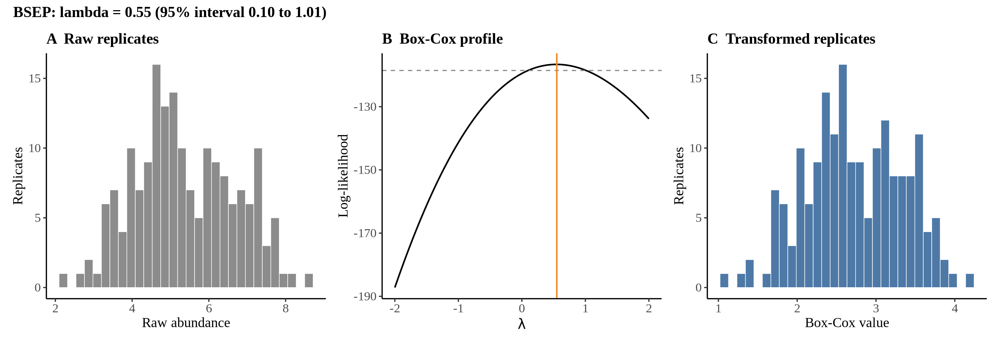
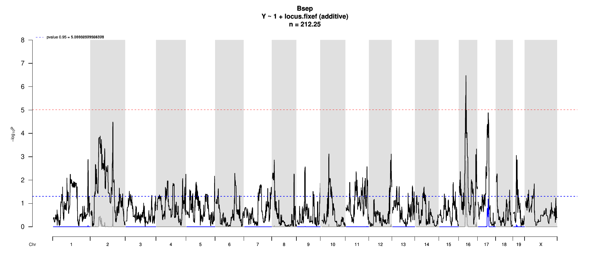
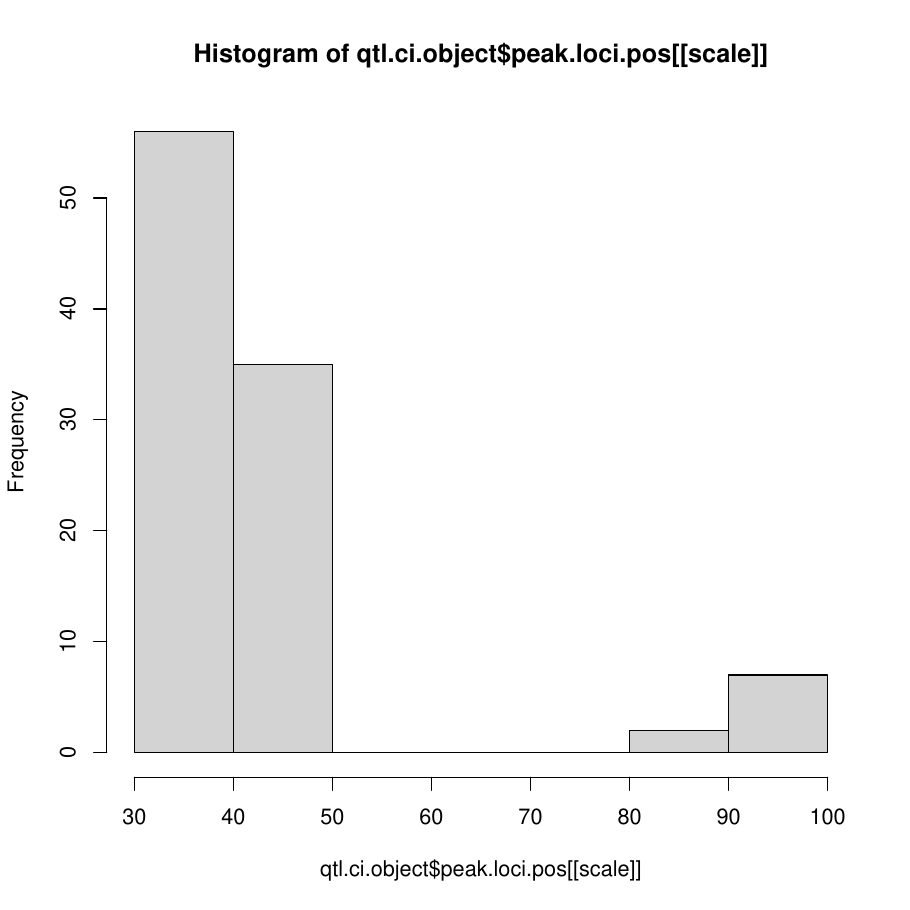
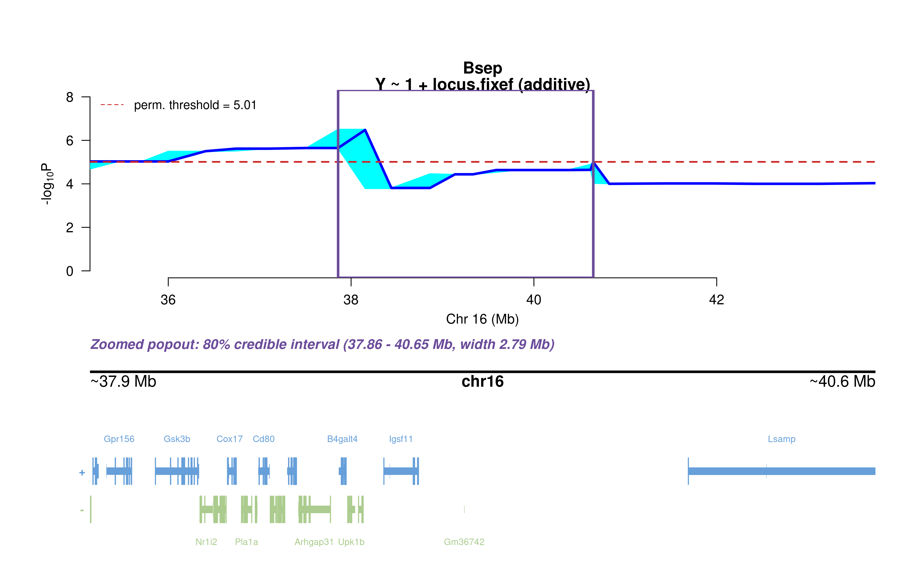
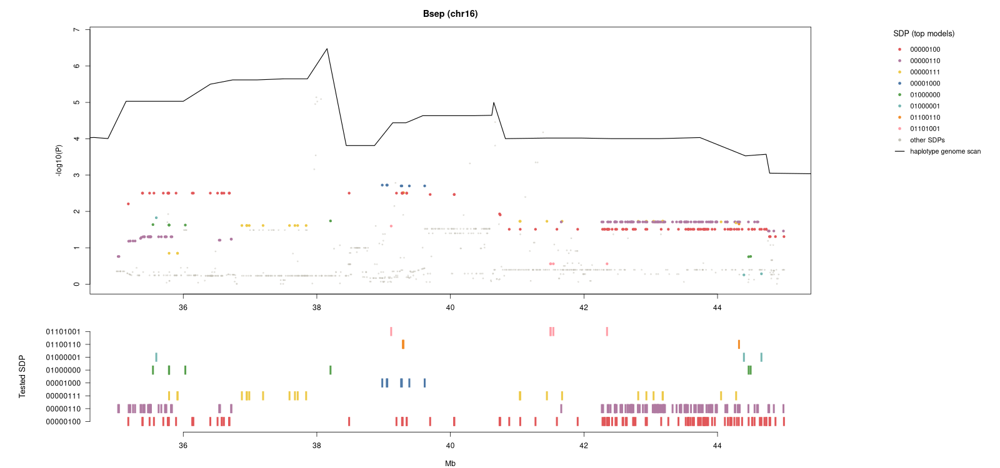
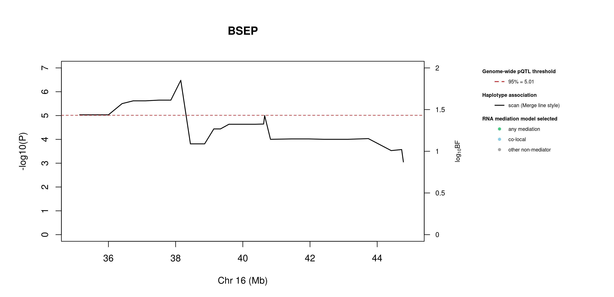
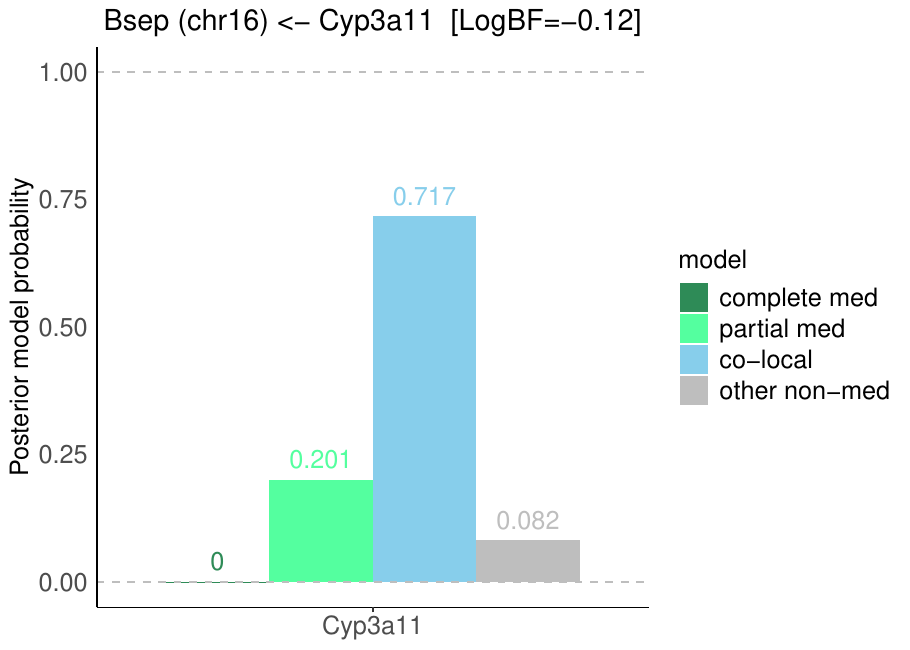

4 Bsep
5 Protein Overview
The mouse protein Bsep, also known as Bile Salt Export Pump, is encoded by the gene Abcb11. It has several aliases, including Abcb11 and Bsep. This protein is primarily involved in the transport of bile acids from the liver to the bile ducts, playing a crucial role in bile formation and overall liver function.
6 Data and normalization
Replicate measurements were Box-Cox transformed with a protein-specific λ = 0.55 (95% likelihood interval 0.10 to 1.01), estimated on the individual replicates (boxcox(y ~ strain), no +1 shift). The strain phenotype is the mean of the transformed replicates and the strain noise used for the wisam weights is their variance.


6.1 Heritability
Broad-sense heritability of the protein is 0.58 (95% CI 0.41–0.69; BH-adjusted P 1.69e-16). Its paired transcript is Abcb11 (array probe 1449817_PM_at, paired from the measured peptide STALQLIQR). Transcript H² is 0.22 (95% CI 0.06–0.36; BH-adjusted P 4.24e-03).
7 pQTL genome scan
Genome scan of the Box-Cox phenotype with wisam weights (miqtl scan.h2lmm, 11 imputations); significance thresholds come from 1000 permutations (GEV fit to the permutation maxima of −log10 P). Strongest locus: chr16:38.15 Mb, P = 3.32e-07, adjusted P = 1.48e-03; 95% threshold = 5.01 (−log10 P).

8 Significant peak(s)
8.1 Chromosome 16 peak (UNC26665635)
| Peak position | −log10(P) | Adjusted P | 90% credible interval | Encoding gene | Gene location | pQTL type |
|---|---|---|---|---|---|---|
| chr16:38.15 Mb | 6.48 | 1.48e-03 | 35.14–43.74 Mb | Abcb11 | chr2:69.24–69.34 Mb | trans |
A pQTL is cis when the gene encoding the protein lies within the credible interval and trans otherwise.

Download: PDF

Download: PNG

8.1.1 Merge / diplotype fine-mapping

Download: PNG

In plain terms, the strongest Merge strain distribution pattern (SDP) splits the eight founders into allele 0: A/J, CAST/EiJ; allele 3: NOD/ShiLtJ, NZO/HlLtJ; allele 1: C57BL/6J; allele 2: 129S1/SvImJ; allele 4: PWK/PhJ; allele 5: WSB/EiJ. That is 6 functional alleles: founders in the same group are inferred to carry the same functional allele at this locus.
8.1.2 TIMBR allelic series

Download: JPG

Download: PNG

Download: JPG

Download: PNG
The highest-posterior TIMBR allelic series at the peak splits the founders into allele 0: A/J, 129S1/SvImJ, CAST/EiJ, PWK/PhJ; allele 1: C57BL/6J, NOD/ShiLtJ, NZO/HlLtJ, WSB/EiJ. That is 2 functional alleles: founders in the same group are inferred to carry the same functional allele at this locus.
Number of functional alleles. At the lead locus (UNC26665635, 38.15 Mb) the posterior probability of a bi-allelic series (two functional alleles) is 0.30, tri-allelic 0.35, and four or more alleles 0.35; a single allele (no QTL effect) has probability 0.00. For comparison, the Chinese-restaurant-process prior gives 0.50 / 0.29 / 0.14 for one / two / three alleles, so the data move weight away from a single allele. The locus in the credible interval whose single best allelic series has the highest posterior probability is JAX00068722 (41.46 Mb; series 0,1,0,1,1,0,0,0, P = 0.29); there bi-allelic = 0.45, tri-allelic = 0.32, four or more = 0.21.


8.1.3 RNA mediation



0 candidate transcripts lie in the credible interval. 0 have a best-model log10 Bayes factor ≥ 0.5 and mediation has the highest posterior probability among the model classes; these are labelled in the figure: none.. Mediation means the transcript is best explained as lying on the path from the QTL to the protein; co-local means it shares the QTL without mediating; log10 BF is the evidence for the best-supported model against the null.

Download: PDF